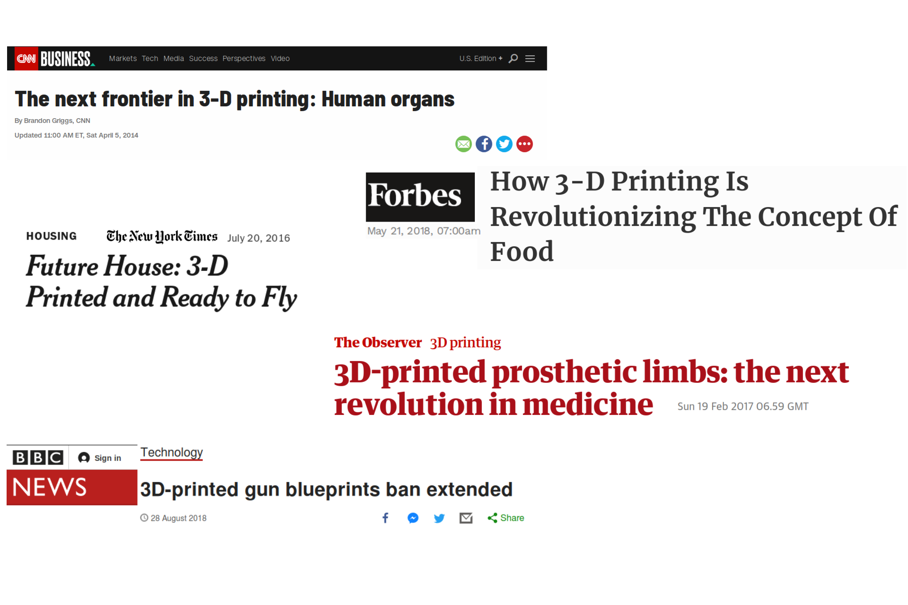

3D printing workshop
Prerequisites
The expectations of 3D printing
Mordern vs Primitive 3D printing
Modern
Primitive
An evolution not a revolution
The singularity of 3D printing
Why is 3D printing compelling for (some) scientists
Digitalised design
computer
Accessibility
Translation
Examples
Important consideration
Startegy
Design compatibility
Physicochemical properties
The workflow
Published with bookdown
3D printing Workshop
The expectations of 3D printing

3D printing, hopes and fears of a revolution